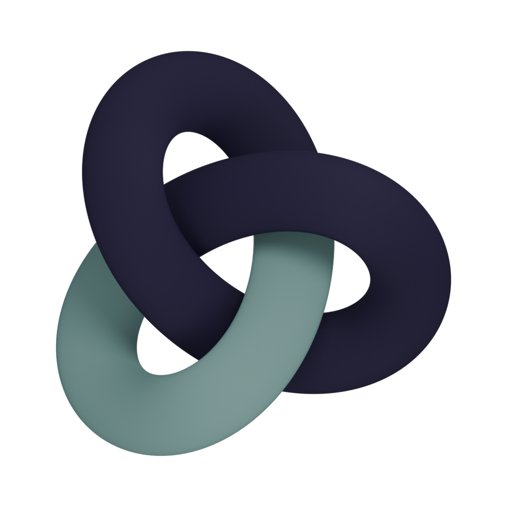
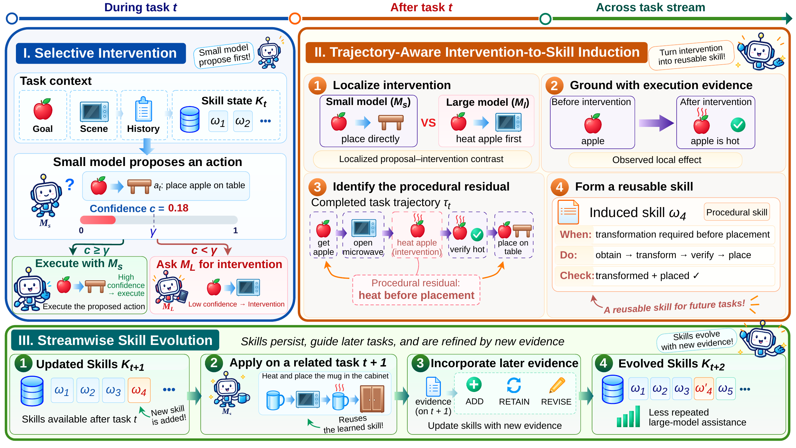

From Intervention to Skill: Evolving Small–Large Language Model Collaboration
Overview
Intervention-to-Skill (I2S) turns selectively acquired large-model assistance into reusable skills that can improve future collaboration. Both acting models remain fixed during deployment, while accumulated skill state changes the effective small-model policy.

Key Features
- Reusable procedural skills. An intervention can reveal reusable procedural structure beyond the action itself, including how to order actions, verify outcomes, or recover from failures.
- Streamwise skill evolution. These skills persist across tasks and evolve as new evidence becomes available.
- Task quality and efficiency. Compared with SkillGen, the largest task-quality gain reaches 27.1 points and weighted token usage is reduced by as much as 63.2%.
Abstract
Small–large language model collaboration improves inference efficiency by assigning routine decisions to a smaller model and invoking a stronger model when additional capability is needed. Existing approaches primarily optimize this allocation for the current interaction, leaving the value of a large-model intervention largely transient. We study whether past interventions can instead enable collaboration to evolve. We introduce Intervention-to-Skill (I2S), which converts execution-supported large-model interventions into reusable skills. I2S localizes the decision opportunity at which stronger assistance is requested, grounds its effect in environment feedback, and uses trajectory context to identify a reusable procedural residual. The resulting skills persist across tasks and evolve with new evidence, allowing the effective small-model policy to improve while both acting models remain fixed.
Across ALFWorld, WebShop, and ScienceWorld with Qwen3-8B paired with Qwen3-32B, DeepSeek-V4-Flash, and Gemini-2.5-Flash, I2S consistently improves task quality over strong routing and skill-based baselines. Compared with SkillGen, task-quality gains reach 27.1 score points and weighted token usage is reduced by up to 63.2%. As skills accumulate, task quality increases while large-model involvement decreases, and acquired skills are repeatedly reused in later small-model decisions. These results establish small–large collaboration as a cumulative adaptation process in which previous assistance reshapes the future division of labor between models.
Method
- Selective intervention. During a task, action-conditioned selective intervention identifies small-model proposals that require stronger assistance. Deployment uses the fixed threshold γ = 0.99. Large-model assistance is triggered when proposal confidence falls below this threshold or when an execution-side recovery condition is observed.
- Skill induction. After task completion, trajectory-aware skill induction extracts the reusable procedural relation exposed by supported interventions.
- Skill evolution. Add introduces a skill for a procedural residual not yet represented in the state. Retain preserves an existing skill when the new evidence supports content already represented. Revise updates the evidence-implicated fields of an existing skill while preserving compatible procedural structure.
Results
We evaluate I2S on ALFWorld, WebShop, and ScienceWorld. Qwen3-8B serves as the small actor and is paired separately with Qwen3-32B, DeepSeek-V4-Flash, and Gemini-2.5-Flash as the large-model backend.
Overall Performance and Token Usage
I2S achieves the highest or tied-highest score in all nine benchmark–backend settings. Relative to SkillGen, I2S uses fewer weighted tokens in eight of nine settings while again improving task quality in all nine.
Seven methods share task sets and order within each backend. Score retains the native benchmark metric and W denotes complete-stream weighted output tokens per task in thousands.
| Method | ALFWorld | WebShop | ScienceWorld | |||
|---|---|---|---|---|---|---|
| Score ↑ | W ↓ | Score ↑ | W ↓ | Score ↑ | W ↓ | |
| Qwen3-8B + Qwen3-32B | ||||||
| Small-Only | 67.9 | 8.6 | 56.3 | 1.4 | 46.5 | 9.2 |
| Large-Only | 85.1 | 13.7 | 57.9 | 3.4 | 60.3 | 11.5 |
| AutoMix | 76.9 | 14.0 | 54.6 | 3.9 | 58.0 | 14.4 |
| ExpeL | 89.6 | 11.0 | 54.0 | 5.2 | 46.8 | 16.4 |
| Cheatsheet | 79.9 | 14.9 | 47.6 | 7.1 | 56.1 | 19.2 |
| SkillGen | 82.8 | 14.7 | 60.8 | 5.1 | 62.3 | 17.3 |
| I2S | 90.3 | 8.3 | 64.1 | 2.1 | 73.9 | 10.9 |
| Qwen3-8B + DeepSeek-V4-Flash | ||||||
| Small-Only | 67.9 | 9.2 | 56.3 | 1.1 | 51.9 | 8.2 |
| Large-Only | 98.5 | 7.1 | 71.1 | 3.1 | 87.0 | 29.0 |
| AutoMix | 94.0 | 10.4 | 67.5 | 3.5 | 72.2 | 27.2 |
| ExpeL | 99.3 | 6.5 | 67.0 | 5.4 | 87.6 | 15.5 |
| Cheatsheet | 100.0 | 10.2 | 69.8 | 11.0 | 83.6 | 10.9 |
| SkillGen | 97.8 | 9.4 | 69.9 | 7.0 | 87.8 | 24.3 |
| I2S | 100.0 | 6.0 | 75.2 | 6.5 | 91.0 | 31.6 |
| Qwen3-8B + Gemini-2.5-Flash | ||||||
| Small-Only | 70.9 | 8.3 | 56.6 | 1.2 | 49.5 | 8.7 |
| Large-Only | 85.8 | 1.1 | 66.8 | 0.3 | 53.5 | 1.1 |
| AutoMix | 84.3 | 7.1 | 65.1 | 1.7 | 57.5 | 6.0 |
| ExpeL | 82.1 | 7.7 | 67.7 | 1.7 | 61.9 | 7.2 |
| Cheatsheet | 87.3 | 6.3 | 64.0 | 2.1 | 62.5 | 6.9 |
| SkillGen | 85.8 | 9.8 | 67.7 | 2.7 | 56.2 | 7.8 |
| I2S | 94.0 | 3.6 | 75.5 | 1.1 | 83.3 | 4.0 |
We measure complete-stream weighted token usage as W = L + 0.25S, where L and S are charged large-model and small-model output tokens.
Evolution Across Deployment
Collaboration shifts toward higher task quality with less large-model involvement as deployment progresses.

Persistent Skill Reuse
Procedural skills persist beyond the intervention that created them and are reused across later tasks. Across the main evaluation streams, 675 of 856 later skill-citing decisions are executed by the small model without large-model takeover. Among these executions, 519 receive a native environment acknowledgement aligned with the cited skill operation and expected outcome.

Confidence Calibration
Confidence calibration sharply improves proposal-level action assessment. ROC–AUC increases from 0.6488 to 0.9558, while ECE decreases from 24.88% to 1.63%. Across the full matched ALFWorld deployment, calibration increases task score by 5.22 percentage points while reducing LM Use by 24.01 percentage points.

Citation
Please cite our paper as:
@misc{shi2026i2s,
title = {From Intervention to Skill: Evolving Small--Large Language Model Collaboration},
author = {Zhenning Shi and Ran Wei and Ning Song and Yongqi Li},
year = {2026},
url = {https://github.com/ModalityDance/I2S}
}
Acknowledgements
We thank the teams behind Qwen3, ALFWorld, WebShop, ScienceWorld, vLLM, and Transformers for their open-source models, environments, and tools.
I2S is licensed under the MIT License.